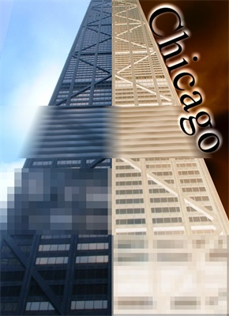

Common Effects

The
following layer-level effects allow the user to alter the image how he or she
feels fit. These effects maybe be applied to the layer as a whole or to a
region selected by either the Rectangle Select Tool or the Lasso Select
Tool. Most of the effects offered by Paint.NET can be honed using
specific settings.
To learn more about a specific effect, follow the links below: